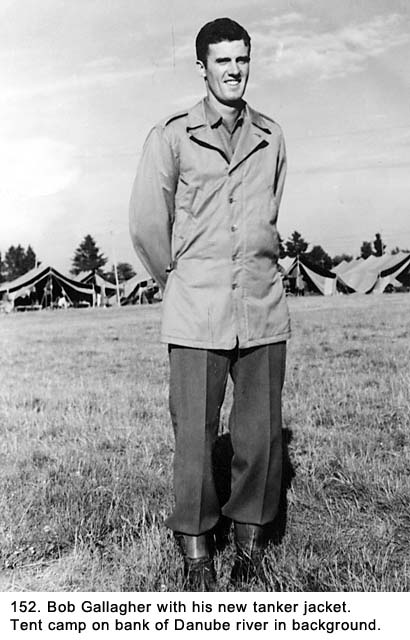
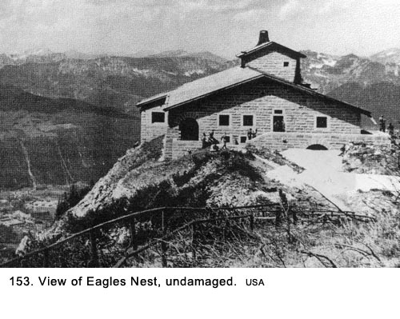
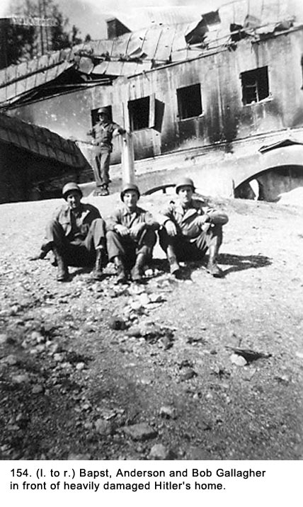

<html>

<head>
<meta name="description" content="Word War 2 Story - Scratch One Messerschmitt">
<meta name="keywords" content="World War II,Third Army,Antiaircraft">
<title>World War II Story -&nbsp; Straubing, Germany - Chapter 24 - Gallagher</title>

</head>

<body bgcolor="#e8e8e8">

  <center>
<table border="2" width="700" bordercolor="#c0c0c0" cellpadding="12" cellspacing="0" bgcolor="#ffffff">
  <tr>
    <td>
      <center></center>
    <p><a href="https://gallagherstory.com/"><font face="Arial" size="1">gallagherstory.com</font></a></p>
    
    <p><font face="Arial" size="2"><a href="index.html">Table of Contents</a>&nbsp; &lt; - - - return</font></p>
    
    <p><font face="Arial" size="2"><a href="chapter25.html">Chapter 25</a>&nbsp; &lt; - - - next</font></p>
    
<p><font color="#006666" face="Arial" size="4">
World War II Story by Robert F. Gallagher</font><font face="Arial" size="3"><br>
"Scratch One Messerschmitt"</font></p>

<p><font face="Arial" size="6">Chapter 24 - Straubing, Germany</font></p>

<p><i><b><font face="Arial">What luck for the rulers that men do not think.<br>
    </font></b><font face="Arial">Adolph Hitler</font></i></p>

    <p align="left"><font face="Arial" size="3"><i><b>_______________________</b></i></font>
</p>

    <p><font face="Arial" size="3">We arrived at the Army Air Force air base
    taken over from the Luftwaffe near the town of Straubing, Germany. The
    Germans had called the airport Brukm|hl. Instead of digging in, we parked
    our guns and trucks side by side. It seemed strange to be so casual about
    such things after being on alert such a long period of time. We stayed in
    wooden barracks and got our first </font><font face="Arial" size="3"> good, hot meal in quite a long time. A
    quartermaster outfit had a kitchen set up and they were dispensing the
    nearest thing to fresh food we had eaten in some time. The barracks had
    shower rooms that got a lot of heavy use. It was fun being around other
    members of our battery and we exchanged stories and experiences. Everyone
    was in a very good mood. The rumors about where we were going began to
    circulate hot and heavy. They would be expounded upon and added to as they
    were repeated until someone's earlier guess was now related as positive
    fact. As usual, most of them would turn out to be wrong.</font></p>
    <p><font face="Arial" size="3">On May 12th, we moved out of the barracks and
    went down to a clearing located on to the bank of the Danube River, still
    near Straubing. We set up a battalion camp and stayed for an extended
    period. We lived in large sand-colored tents that had been used by Germany's
    Afrika Korps during the African Campaign. Some men in A Battery had found
    them in a nearby warehouse and took them despite the objections of the
    owner. The scenic beauty of the surrounding country and the free flowing
    look of the tents with their more attractive color made the camp look like a
    resort area instead of an Army camp.</font></p>
    <p><font face="Arial" size="3">The weather was grand the whole time we were
    there, and the scenery with its rolling hills was beautiful. The cooks were
    doing their best to turn out tasty meals, and after an almost steady diet of
    rations everything tasted good. The local German women would come around and
    pick up our laundry. We would give them soap, and they would go down to the
    river and wash it. They then rinsed it with well water. I don't know where
    they dried it, but when we got it back, it was sparkling clean, ironed,
    neatly folded, and had a very pleasing odor. We started to feel civilized
    again. To pay the ladies for their services, we gave them what was left of
    the soap and some cigarettes. Both items were considered better than cash
    and could be bartered for anything. After a while, the women would bring
    their children when they returned the laundry. We would give the kids
    Hershey bars after insisting on a smile.</font></p>
    <p><font face="Arial" size="3">Every evening as the sun was going down, a
    young girl from the village would show up and very methodically spread out a
    blanket in an open field, about two hundred feet from the camp, as an
    obvious invitation for anyone who was interested. The word got around she
    was not just young but very young; and nobody wanted to be seen approaching
    her. If she did any business, it was only on the darkest nights. We called
    her Blanket Annie.</font></p>
    <p><font face="Arial" size="3">We had no duty to pull, so we amused
    ourselves by reading, playing cards, writing letters, or horsing around. We
    played a lot of volleyball and twelve-inch fast-pitch softball, which I
    still found to be quite boring. It was a very enjoyable time but, at the
    same time, we felt a certain uneasiness about it all. We had all been in the
    Army long enough to know it could not possibly last too long.</font></p>
    <p><font face="Arial" size="3">Some of the men went swimming in a small
    inlet off the Danube River where the current was not as swift. The mess
    sergeant from B-Battery was carried out into the river by a current and
    drowned. He would be the fourth soldier in our battalion to die from an
    accident since we had been in Europe. Some men from his battery went out in
    a boat and retrieved his body. We were all surprised they found him because
    we thought the current was so swift, it would have carried him far
    downstream. That incident put an end to swimming in the Danube.</font></p>
    <p><font face="Arial" size="3">Several members of our battalion had to go
    into Russian-occupied Czechoslovakia for some kind of an assignment. When
    they got back to camp, they told horror stories about how the Russians were
    treating the Czechs who had collaborated with the Germans during the
    occupation. In this one town, the Russians set up a gauntlet of
    club-wielding soldiers down the main street. Then they forced the
    collaborators to run between the two lines of soldiers as they were beaten
    with the clubs. If they were not dead at the end, they shot them. One of our
    GIs tried to offer some help to a Czech woman whose husband had just been
    killed and a Russian soldier threatened him. They all reported the Russians
    were not friendly and seemed to have a chip on their shoulder. The men said
    their experience was more like dealing with the enemy than an ally. They
    also reported on their way to and from their objective, they had observed
    thousands of Czech civilians fleeing to the west because of their fear of
    the Russians.</font></p>
    <p><font face="Arial" size="3">While we were enjoying our vacation in
    Straubing and relishing the fact the European war was over, we still had one
    big worry. We thought we might be sent to the Pacific Theater of Operations
    (PTO) to fight the Japanese. It was difficult to judge how that war was
    going with the minimal amount of world new reaching us. We knew troops were
    being mobilized for the invasion of the Japanese Islands but that's all we
    knew. There were news stories about the Americans capturing certain islands,
    but we never knew how they fit into the overall operation. The rumors were
    rampant, the most persistent ones being that all but the minimum number of
    troops needed to keep order in the ETO would be sent in an expeditious
    manner to the (PTO). One day we would hear we were going to be shipped over
    there and the next day it would be to someplace else in Europe. As days
    turned into weeks with nothing happening, we began to relax and enjoy our
    very pleasant surroundings.</font></p>
    <p><font face="Arial" size="3">One day, I went over to the supply tent to
    get a new field jacket. My old one had frayed edges and was so beaten up it
    was coming apart. To my surprise, I was issued a tanker jacket to replace
    it. </font><font face="Arial" size="3"> This was an article of clothing much in demand because it had some style
    to it. It was beige on the outside with a lining that looked like army
    blanket material, and it was much longer than the army's field jacket (see
    Fig. 152). When I got back to my tent, about half of the men there headed
    over to get theirs. Some of them were tearing holes in their old jackets to
    be sure it was eligible for replacement. It turned out the supply sergeant
    had received a small shipment of the tanker type and all were in the larger
    sizes. Those who had torn their old jackets had their sewing kits out to
    mend them.</font></p>
    <p><font face="Arial" size="3">On June 12th, I got to go on a four-day trip
    to the town of Berchtesgaden in the Alps where we saw Hitler's retreat known
    as Aldershort by the Germans and the Eagles Nest by the Americans. The
    American air force had not bombed that particular structure (See Fig. 153)
    although they heavily damaged Hitlers private residence called Der
    Berghof Obersaulzberg (See Fig. 154). It was located at a lower elevation
    from the Eagles Nest. The civilians in the nearby town
    thought the Americans were wonderful, because they only bombed Hitler's
    house and spared theirs. I went with Vern Bapst, who was in my gun section, and with Andy
    Anderson, who was in another gun section (See Fig. 154). We stayed in the
    quaint Alpine village, living in barracks originally built to house the
    German SS troops guarding Hitler's home. Most of the soldiers we met there
    were from the 101st Paratrooper Division, also known as the "Screaming
    Eagles," which fit with the Eagles Nest.</font></p>
    <p></p>
    <p></p>
    <p><font face="Arial" size="3">They told us some unbelievable stories about
    their war experiences. Everyone was in a festive mood, and we had a lot of
    fun. While we were there, the weather was great, and the food was delicious.
    The scenery with the snow-capped mountains, green forests, winding mountain
    roads, and quaint Bavarian homes was spectacular. Many of the civilians wore
    quaint Alpine outfits and looked like advertisements out of a travel poster.</font></p>
    <p><font face="Arial" size="3">It was interesting to go through the Eagles
    Nest, and I felt kind of strange standing on the outdoor deck where many
    newsreel shots of Hitler and Eva Braun had been taken. Some of the world
    leaders were also photographed there with Hitler, along with Nazis officials
    like Himmler, Goering, and Goebbels.</font></p>
    <p><font face="Arial" size="3">Back at the camp near Straubing, we continued
    to enjoy the area. Some of the men got passes and began to date the local
    German girls since the no-fraternizing rule had been lifted. The girls the
    GIs were dating were very concerned about the lack of men in their village.
    They complained two out of every three were never coming back now that the
    war was over. I don't know if that was an accurate statistic, but it was
    true the German military had very high casualties. Some of the women were so
    concerned about this lack of men who would be available for marriage they
    wanted to have sex with the GIs to assure they would have families.</font></p>
    <p><font face="Arial" size="3">On Monday, July 9th, we left Straubing for a
    long trip by convoy. We were told we were going to Antwerp, Belgium, which
    did not make us too happy. Typical of Army information, we got only minimal
    news thereby generating a whole new round of rumors trying to fill in the
    blanks. We knew Antwerp was a port city, and we were concerned we were going
    to be loaded onto a boat and shipped to the Pacific. We still had all our
    guns and ammunition that went with them intact. The end of the war still
    seemed a long way off.</font></p>
    <p align="left"><font face="Arial" size="2"><b><a href="chapter25.html">Chapter
    25</a>&nbsp; &lt; - - - next</b></font>
</p>
    <p align="left"><font face="Arial" size="2"><a href="index.html">Table of
    Contents</a>&nbsp; &lt; - - - return</font>
</p>
  <p class="MsoBodyText">
    <font face="Arial" size="3">_________________________</font> </p>
  <p class="MsoBodyText">
    <font face="Arial" size="2"><a href="footnotes.html">Footnotes and Source of
    Photographs</a>.</font> </p>
      <p align="left"><font size="2" face="Arial">Copyright, Robert F.
      Gallagher, 1999 - 2015, all rights reserved on all images and content.
      </font>
      <p align="left">
    <p align="left"><a href="https://gallagherstory.com/"><font face="Arial" size="2">gallagherstory.com</font></a></p></td></tr></table>
  </center>

</body>

</html>